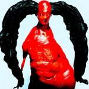

Music Reviews
-
Daughter Not To Disappear
Daughter's second album is a more upbeat, less smothering affair than its predecessor.
Forrest Cardamenis reviews... -

DIIV Is The Is Are
DIIV's second effort, Is the Is Are, is told with barefaced honesty, seen through the lens of a band that is reclaiming their capacities as a unit after their lead songwriter faced near self-destruction.
Juan Edgardo Rodríguez reviews... -

Milk Teeth Vile Child
Milk Teeth plumb their influences from the best of the nineties grunge scene and create their own invigorating organic brand.
Carl Purvis reviews... -

Ty Segall Emotional Mugger
At this point, Ty Segall should be a genre.
Sean Caldwell reviews... -

Steven Wilson 4 1/2
4 1/2 marks a halfway point between Steven Wilson's last full-length record and whatever comes next. While Wilson may be clearing house, most of these tracks are decidedly not throwaways.
Joe Marvilli looks back with Steven Wilson, before he moves forward... -

Savages Adore Life
Savages question how love informs life on their brazenly inclusive second effort.
Juan Edgardo Rodríguez reviews... -

Hinds Leave Me Alone
Hinds' debut LP is giddy with an infectious, effortless joy. Music doesn’t need to be perplexing, and the Madrid-based four-piece are far too concerned about having a good time to let it become so.
Carl Purvis reviews... -
David Bowie Blackstar
With Blackstar, David Bowie disengages himself once again from popular opinion and scoffs at the idea of taking the righteous path, finding inspiration in what is immoral and contentious.
Juan Edgardo Rodríguez reviews... -

Arca Mutant
Alejandro Ghersi’s Mutant almost seems to run against the notion of music itself, threatening to tumble out of a digital underworld and materialize into one of Jesse Kanda’s fear-inducing deformities.
Joseph Moore reviews... -
SOPHIE PRODUCT
The London-based producer, and PC music alumni, releases his much-anticipated, and highly marketable, singles compilation.
Juan Edgardo Rodríguez (the brand) reviews...